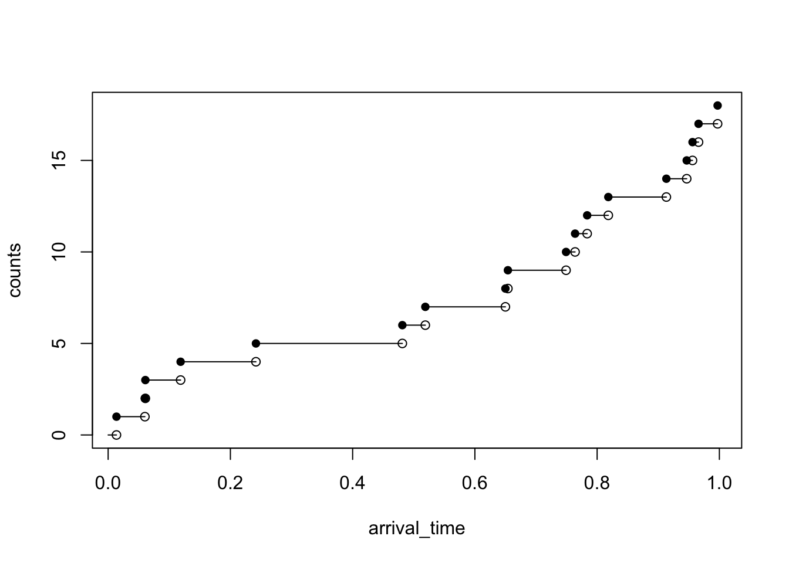

Chapter 5 Ruin Theory
5.1 The classical risk process
Short term risk models for a fixed time period have been studied in the previous sections. In this section, risk models that evolve over time will be presented. Suppose that an insurer
begins with an initial capital \(u\), called an initial surplus,
collects premiums at a constant rate \(c\) per unit time,
and pays claims when losses occur.
The insurer is in ruin if the insurer’s capital becomes negative at some point in time, i.e. the insurer’s surplus falls to zero or below.
Note A surplus is an excess of income or assets over expenditure or liabilities in a given period, typically a financial year:
Example 5.1 An insurer has initial surplus \(u\) of 1 (in suitable units) and receives premium payments at a rate of 1 per year. Suppose claims from a portfolio of insurance over the first two years are as follows:
| Time (years) | 0.4 | 0.9 | 1.5 |
|---|---|---|---|
| Amount | 0.8 | 0.7 | 1.2 |
Plot a surplus process and determine whether ruin occurs within the first three years.
Solution: The insurer’s surplus (or cash flow) at any future time \(t\) (> 0) is a random variable, since its value depends on the claims experience up to time \(t\). The insurer’s surplus at time \(t\) is a random variable. The insurer’s surplus at time \(t\) is denoted \(U(t)\). The following formula for \(U(t)\) can be written as
\[\begin{equation} U(t) = u + ct - S(t), \end{equation}\] where the aggregate claim amount up to time \(t\), \(S(t)\) is \[\begin{equation} S(t) = \sum_{i = 1}^{N(t)} X_i . \end{equation}\]
The following table summarises the values of the surplus function at the time when claims occurs.
| Time | Surplus (before claim) | Surplus (after claim) |
|---|---|---|
| 0 | 1 | 1 |
| 0.4 | 1.4 | 0.6 |
| 0.9 | 1.1 | 0.4 |
| 1.5 | 1 | -0.2 |
The surplus function increases at a constant rate \(c\) until there is a claim and the surplus drops by the amount of the claim. The surplus then increases again at the same rate \(c\) and drops are repeated when claims occur. In this example, ruin occurs at time 1.5. The plot of the surplus process is given in the following figure.
Figure 5.1: The surplus process befor reinsurance arrangment.
Example 5.2 As given in Example 5.1, suppose that the insurer has effected proportional reinsurance with retained proportion of 0.7. The reinsurance premium is 0.4 per year to be paid continuously. Plot a surplus process and determine whether ruin occurs within the first three years. Comment on the results.
Solution: The insurer’s net premium income is 0.6 per year. The insurer’s cash flow or surplus process is now given by \[\begin{equation} U_I(t) = u + (c - c_r)t - \alpha \cdot S(t), \end{equation}\] where \(c_r\) is the reinsurance premium rate and \(\alpha\) is the retained proportion.
The following table summarises the values of the surplus function at the time when claims occurs.
| Time | Surplus (before claim) | Surplus (after claim) |
|---|---|---|
| 0 | 1 | 1 |
| 0.4 | 1.24 | 0.68 |
| 0.9 | 0.98 | 0.49 |
| 1.5 | 0.85 | 0.01 |
Figure 5.2: The surplus process under a proportional reinsurance arrangement.
It should be emphasised that under this proportional reinsurance arrangement, ruin does not occur within 2 years.
5.1.1 Classical risk process
The following assumptions are assumed for the study of the evolution of insurer’s surplus over time.
The insurer’s initial capital is \(u\).
The premium rate per unit of time received continuously is \(c\), i.e. the total amount of premiums received by time \(t\) is \(ct\).
The counting process \(\{N(t) \}_{t \ge 0}\) for the number of claims occurred in the time interval \([0,t]\) is a Poisson process with parameter \(\lambda\).
The claim sizes (or individual claim amounts) \(X_1, X_2, \ldots\) are independent and identically distributed random variables.
The claim sizes \(X_1, X_2, \ldots\) are independent of the counting process \(N(t)\).
The surplus process \(\{U(t) \}_{t \ge 0}\) is then given by \[\begin{equation} \tag{5.1} U(t) = u + ct - S(t), \end{equation}\] where the aggregate claim amount up to time \(t\), \(S(t)\) is \[\begin{equation} \tag{5.2} S(t) = \sum_{i = 1}^{N(t)} X_i . \end{equation}\]
The evolution of insurer’s surplus defined in (5.1) is also known as the classical risk process. The only random and uncertain quantity in (5.1) is the aggregate claims \(S(t)\).
Notes The classical risk model contains many simplification.
The claim-arrival rate \(\lambda\) remains constant over time.
No interest is pain on the surplus.
There is no inflation.
The premium income is received continuously in time.
Claims are paid out immediately.
there are assumptions of independence.
5.1.2 Poisson processes
A Poisson process is a special type of counting process. It can be represented by a continuous time stochastic process \(\{N(t)\}_{t \ge 0}\) which takes values in the non-negative integers. It can be used to model the occurrence or arrival of events over a continuous time interval. The state space is discrete but the time set is continuous. Here \(N(t)\) represents the number of events in the interval \((0,t]\).
The following examples can also be modelled by a Poisson process:
Claims arrivals at an insurance company,
Accidents occurring on the highway, and
Telephone calls to a call centre.
Counting Process
A counting process \(\{N_t \}_{t \ge 0}\) is a collection of non-negative, integer-valued random variables such that if \(0 \le s \le t\), then \(N(s) \le N(t)\).
The following figure illustrates a trajectory of the Poisson process. The sample path of a Poisson process is a right-continuous step function. There are jumps occurring at time \(t_1, t_2, t_3, \ldots\).
lambda <- 17
# the length of time horizon for the simulation T_length <- 31
last_arrival <- 0
arrival_time <- c()
inter_arrival <- rexp(1, rate = lambda)
T_length <- 1
while (inter_arrival + last_arrival < T_length) {
last_arrival <- inter_arrival + last_arrival
arrival_time <- c(arrival_time,last_arrival)
inter_arrival <- rexp(1, rate = lambda)
}
n <- length(arrival_time)
counts <- 1:n
plot(arrival_time, counts, pch=16, ylim=c(0, n))
points(arrival_time, c(0, counts[-n]))
segments(
x0 = c(0, arrival_time[-n]),
y0 = c(0, counts[-n]),
x1 = arrival_time,
y1 = c(0, counts[-n])
)
Recall that a stochastic process \(\{N(t) \}_{t \ge 0}\) is a Poisson process with parameter \(\lambda\) if the process satisfies the three properties:
\(N(0) = 0\).
Independent increments For \(0 < s < t \le u < v\), the increment \(N(t) - N(s)\) is independent of the increment \(N(v) - N(u)\), i.e. the number of events in \((s,t]\) is independent of the number of events in \((u,v]\).
Stationary increments For \(0 < s <t\), the distribution \(N(t) - N(s)\) depends only on \(t -s\) and not on the values \(s\) and \(t\), i.e. the increments of the process over time has a distribution that only depend on the time difference \(t - s\), the lenght of the time interval.
Poisson distribution For \(t \ge 0\), the random variable \(N(t)\) has a Poisson distribution with mean \(\lambda t\).
It follows from conditions the Stationary Increments and Poisson Distribution properties that \[\Pr(N(t) - N(s) = n) = \Pr(N(t-s) - N(0) = n) = \frac{ ( \lambda(t-s))^n e^{-\lambda(t-s)} }{n!}, \quad \quad s < t, \, n = 0,1,2, \ldots\]
Notes
The sample paths of \(\{N(t) \}_{t \ge 0}\) are non-decreasing step functions, or the process is referred to be as a counting process.
A process with stationary and independent increments can be thought of as starting over at any point in time in a probabilistic sense. The ‘starting over’ property follows from the fact that
the exponential distribution has the memoryless property, and
the times between successive events (or interarrival times) are independent and identically distributed exponential random variables with mean \(1/\lambda\).
For more details about Poisson processes, please refer to the contents of the course “SCMA 469 Actuarial Statistics”
5.1.3 Compound Poisson processes
The aggregate claims process \(S(t)\) defined in (5.2) of the classical risk process is said to be a compound Poisson process with Poisson parameter \(\lambda\). The compound Poisson process has the following important properties:
For each \(t\), the random variable \(S(t)\) has a compound Poisson distribution with parameter \(\lambda t\), i.e. \[S(t) \sim \mathcal{CP}(\lambda t, F_X(x)).\] Thus, the mean and variance of the compound Poisson distribution are \[\mathrm{E}[S(t)] = \lambda t \mathrm{E}[X], \quad \mathrm{Var}[S(t)] =\lambda t \mathrm{E}[X^2].\] The moment generating function of \(S(t)\) is \[M_{S(t)}(r) = \exp(\lambda t(M_X(r) - 1)).\]
It has stationary and independent increments, i.e. for disjoint time intervals \(0 < s < t \le u < v\), the random variables \(N(t) - N(s)\) and \(N(v) - N(u)\) are independent and \(N(t) - N(s)\) depends only on \(t -s\) and not on the values \(s\) and \(t\). Hence, the random variables \(S(t) - S(s)\) and \(S(v) - S(u)\) are independent and have \(\mathcal{CP}(\lambda (t -s), F_X(x))\) and \(\mathcal{CP}(\lambda (v - u), F_X(x))\) distributions, respectively.
Notes Various properties of the aggregate claims process \(S(t)\) can be summarised as follows:
\(S(1) \sim \mathcal{CP}(\lambda, F_X(x))\) is the aggregate claims in the first year.
\(S(n) - S(n-1) \sim \mathcal{CP}(\lambda, F_X(x))\) is the aggregate claims in the \(n\)th year, for \(n = 1,2, \ldots\).
The process \(\{ S(n) - S(n-1) \}_{n=1}^\infty\) is a sequence of independent and identically distributed random variables representing the aggregate claims in successive years.
5.1.4 The relative safety loading
According to the expected value principle, the premium rate \(c\) per unit time is defined by \[c = (1 + \theta) \mathrm{E}[S(1)] = (1 + \theta) \lambda \mu_X.\] Hence the relative safety loading (or premium loading factor or relative security loading) \(\theta\) is given by \[\theta = \frac{c - \lambda \mu_X}{\lambda \mu_X}.\] In addition, the insurer should load the premium for profit so that \(c > \lambda \mu_X\). This finding follows from the following example.
Let \(\mu_X\) and \(\sigma^2_X\) denote the mean and the variance of claim sizes \(X_i\) (in one period).
Example 5.3 Consider the following questions.
Calculate the expected surplus and the variance surplus at time \(t\).
Calculate the expected profit per unit time in \((0, t]\).
Solution:
- From \(U(t) = u + ct - S(t),\) the expected surplus at time \(t\) is \[\begin{align} \mathrm{E}[U(t)] &= u + ct - \mathrm{E}[S(t)] \\ &= u + ct - (\lambda t)\mathrm{E}[X] \\ &= u + ct - (\lambda t)\mu_X \\ &= u + (c - \lambda \mu_X)\cdot t, \end{align}\] and \[ \mathrm{Var}[U(t)] = \mathrm{Var}[S(t)] = (\lambda t)\mathrm{E}[X^2].\]
- The expected profit per unit time in \((0, t]\) can be calculated from \[\frac{\mathrm{E}[U(t) - U(0)]}{t} = c - \lambda \mu_X.\] This motivates the net profit condition: \[c > \lambda \mu_X. \] Given \(\lambda\) and \(\mu_X\), we aim to set the premium rate \(c\) that satisfies the net profit condition.
Notes
The insurer can make a profit provided that \(c > \lambda \mu_X\) or the relative safety loading \(\theta\) is positive. In this case, the surplus will drift to \(\infty\), but ruin could still occur. The rate at which premium income comes in is greater than the rate at which claims are paid out.
On the other hand, if \(c < \lambda \mu_X\), then the surplus will drift to \(-\infty\), but ruin is certain.
If \(c = \lambda \mu_X\), the surplus will drift to \(\infty\) and \(-\infty\), but ruin is certain (eventually).
5.1.5 Ruin probabilities
Various definitions of ruin probabilities are given.
The probability of ruin in infinite time (or the ultimate ruin probability) is defined by \[\psi(u) = \Pr(U(t) < 0 \quad \text{ for some } t > 0).\]
The finite-time ruin probability (or the probability of ruin by time \(t\)) is defined by \[\psi(u,t) = \Pr(U(s) < 0 \quad \text{ for some } s \in (0,t]).\]
The discrete time ultimate ruin probability is defined by \[\psi_h(u) = \Pr(U(t) < 0 \quad \text{ for some } t \in \{h, 2h, 3h, \ldots \}).\]
The discrete time ruin probability in finite time is defined by \[\psi_h(u,t) = \Pr(U(s) < 0 \quad \text{ for some } s \in \{h, 2h, 3h, \ldots, t\}).\]
Notes
For \(0 \le u_1 \le u_2\), \[\psi(u_1) \ge \psi(u_2),\] and \[\psi(u_1,t) \ge \psi(u_2,t),\] i.e. the ultimate ruin probability and finite-time ruin probability are non-increasing in \(u\). Intuitively, the larger the initial surplus, the less likely it is that ruin will occur either in a finite time period or an unlimited time period.
If ruin occurs under the discrete time, it must occur under the continuous time, i.e. \[\psi_h(u) < \psi(u).\] Similarly, \[\psi_h(u,t) < \psi(u,t).\]
For a given initial surplus \(u\) and \(0 < t_1 < t_2\), \[\psi(u,t_1) < \psi(u,t_2).\] Intuitively, the longer the period considered when checking for ruin, the more likely it is that ruin will occur.
The discrete time ultimate ruin probability \(\psi_h(u)\) could be used as an approximation of \(\psi(u)\) provided \(h\) is sufficiently small.
The discrete time ruin probability in finite time \(\psi_h(u,t)\) could be used as an approximation of \(\psi(u,t)\) provided \(h\) is sufficiently small.
Example 5.4 Suppose the annual aggregate claims for a portfolio of policies is approximately normal.
The insurer’s initial surplus is 1000 (in suitable units) and the premium rate is 1500 per year.
The number of claims per year has a Poisson distribution with parameter 50.
The distribution of claim sizes is lognormal with parameters \(\mu = 3\) and \(\sigma^2 = 0.9\).
Calculate the probability that the insurer’s surplus at time 2 will be negative.
Solution: Using the normal approximation, the total claims \(S\) can be approximated by \(S \sim \mathcal{N}(\mathrm{E}[S], \mathrm{Var}[S])\). We have \[\begin{align} \mathrm{E}[X] &= e^{\mu + \sigma^2/2} = 31.500392 \\ \mathrm{E}[X^2] &= e^{2\mu + 2\sigma^2} = 2440.601978. \end{align}\]
Therefore, \[\begin{align} \mathrm{E}[S(2)] &= 2(50)\mathrm{E}[X] = 3150.039231 \\ \mathrm{Var}[S(2)] &= 2(50)\mathrm{E}[X2] = 2.440602\times 10^{5} . \end{align}\]
Hence, ruin will occur if \(S(2)\) is greater than the initial surplus plus premiums received. Therefore, the probability of ruin is \[\begin{align} \Pr(S(2) > u + 2c) &= \Pr(S(2) > 1000 + 2(1500)) \\ &= \Pr(Z > \frac{1000 + 2(1500) - 3150.0392309}{\sqrt{2.440602\times 10^{5}}}) \\ &= \Pr(Z > 1.720483) = 0.04267. \end{align}\] the probability of ruin is approximately 4.267%.
5.2 Simulation of ruin probabilities
In this section, we will use simulation to numerically estimate the probability of ruin. First, we introduce the inverse transform method, which is a method for generating random numbers from any probability distribution by using its inverse cumulative distribution.
Example 5.5 Let \(F(x)\) be a continuous cumulative density function. Let \(Y\) be a random variable with a \(U(0,1)\) distribution. Define the random variable \(X\) by \[X = F^{-1}(Y).\] Show that the cumulative density function of \(X\), \(F_X(x)\) is \(F(x)\).
Solution: We need to show that \(Pr(X \le x) = F(x)\) for all \(x\), i.e. \(F_X(x)= F(x)\) as defined above.
It follows from the monotonicity of \(F\) and the definition
\[\begin{align} F_X(x) &= \Pr(X \le x)\\ &= \Pr(F^{-1}(Y) \le x)\\ &= \Pr(F(F^{-1}(Y)) \le F(x)\\ &= \Pr(Y \le F(x))\\ \end{align}\]
Since \(Y \sim U(0,1)\), we have \(\Pr(Y \le t) = t\) for any $t . Therefore,
\[ F_X(x) = \Pr(Y \le F(x)) = F(x).\]
Note We can use this result to generate values from the required probability distribution (which will be useful in Excel). In order to generate \(X_1, X_2, X_3, \ldots, X_n\) from \(\mathcal{G}(\alpha,\lambda)\) (or any other distributions) in Excel, we use GAMMAINV(RAND(), alpha, 1/lambda). However, in R, we can simply use rgamma(n, alpha, lambda) to generate \(n\) random numbers from the \(\mathcal{G}(\alpha,\lambda)\) distribution.
Example 5.6 The aggregate claims process for a risk is compound Poisson with Poisson parameter \(\lambda = 100\) per year. Individual claim amounts have \(\text{Pa}(4,3)\). The premium income per year is \(c = 110\) (in suitable units), received continuously.
Using either Excel or R to simulate 1000 values of aggregate claims \(S\), assuming that \(S\) is approximated by a translated gamma approximation,
Estimate \(\hat{\psi}_1(50, 5)\), an estimate of \(\psi_1(50,5)\).
Estimate the standard error of \(\hat{\psi}_1(50, 5)\).
Calculate a 95% confidence interval for your estimate in 1.
Estimate \(\psi_{0.5}(50, 5)\).
Solution:
- An estimate of \(\psi_1(u,5)\) with \(u = 50\) and \(c =110\) can be obtained as follows:
From the properties of \(S(t)\),
The aggregate claims in the first year have \(S(1) \sim \mathcal{CP}(\lambda, F_X(x))\) distribution with \(\lambda = 100\) and \(X \sim \text{Pa}(4,3)\)
The aggregate claims in the \(j\)th year, for \(j = 1,2, \ldots, 5\) have \(S(j) - S(j-1) \sim \mathcal{CP}(\lambda, F_X(x))\) distribution.
It follows that \[\begin{align} \psi_1(u,5) &= \Pr(U(j) < 0 \quad \text{ for at least one of } j \in \{1,2, \ldots, 5\}) \\ &= \Pr(u + cj - S(j) < 0 ), \text{ for at least one of } j = 1,2, \ldots, 5. \end{align}\] When
\(j = 1, U(1) = 50 + 110 - S(1)\)
\(j = 2, U(2) = 50 + 2 - S(2) = U(1) + c - (S(2) - S(1))\)
\(j = 3, U(3) = 50 + 3 - S(3) = U(2) + c - (S(3) - S(2))\)
\(j = 4, U(4) = 50 + 4 - S(4) = U(3) + c - (S(4) - S(3))\)
\(j = 5, U(5) = 50 + 5 - S(5) = U(4) + c - (S(5) - S(4))\)
The algorithm to estimate the finite time ruin in discrete time can be described as follows:
Step 1. Simulate values of \(S(1), S(2) - S(1), \ldots, , S(5) - S(4)\) from \(\mathcal{CP}(\lambda, F_X(x))\) distribution. Then compute \(U(1), U(2), \ldots U(5)\).
Step 2. Check if one of \(U(1), U(2), \ldots U(5)\) are negative.
Step 3. Repeat the simulations (1 and 2) 1000 times.
Step 4. Le \(M\) be the number of simulations out of 1000 where ruin occurs. Then \(\hat{\psi}_1(50, 5) = \frac{M}{1000}.\)
From the results, there are \(M = 21\) simulations that ruin occurs, and hence \[\hat{\psi}_1(50, 5) = \frac{M}{1000} = \frac{21}{1000}.\]
The estimation of the standard error of \(\hat{\psi}_1(50, 5)\) can be obtained as follows. We know that \(M \sim \mathcal{B}(1000,p)\) where \(p = \hat{\psi}_1(50, 5)\). Then, \[\textrm{Var}\left[\frac{M}{1000}\right] = \frac{1}{1000^2}\textrm{Var}[M] = \frac{1000 (p) (1-p)}{1000^2}\] and \[ \textrm{SD}[\hat{\psi}_1(50, 5)] = \frac{1000 (0.021) (1-0.021)}{1000^2} = 0.004534 \]
The 95% confidence interval of the estimate is \[ (\hat{\psi}_1(50, 5) - z_{\alpha/2}\textrm{SD}[\hat{\psi}_1(50, 5)], \hat{\psi}_1(50, 5) + z_{\alpha/2} \textrm{SD}[\hat{\psi}_1(50, 5)]) = (0.012113,0.029887).\]
For the estimation of discrete time probability of ruin where the surplus process is checked at time intervals of length 0.5, we proceed as follows. First we note that
\(S(1/2), S(1) - S(1/2), S(3/2) - S(1), \ldots, S(5) - S(9/2) \sim \mathcal{CP}((1/2)\lambda, F_X(x))\) distribution.
In addition,
U(1/2) = U(0) + c (1/2) - S(1/2)$
U(1) = U(1/2) + c (1/2) - ( S(1) - S(1/2) )$
U(3/2) = U(1) + c (1/2) - (S(3/2) - S(1))$ , \(\ldots\),
U(5) = U(9/2) + `c (1/2) - ( S(5) - S(9/2) )$.
It follows that
\[\begin{align} \mathrm{E}[S(1/2)] &= (1/2)(100)\mathrm{E}[X] = (1/2)\mathrm{E}[S(1)] = 50 \\ \mathrm{Var}[S(1/2)] &= (1/2)(100)\mathrm{E}[X^2] = (1/2)\mathrm{Var}[S(1)] = 150 \\ \mathrm{Sk}[S(1/2)] &= \sqrt{2} \mathrm{Sk}[S(1)] = 0.734847 . \end{align}\]
Now we assume that \(S(j) - S(j-1)\) for \(j = 1/2, 1, 3/2, \ldots, 5\) can be approximated by \(Y + k\) where \(Y \sim \mathcal{G}(\alpha, \lambda)\) and \(k\) is a constant. It follows that \[ \hat{\alpha} = 7.407407, \quad \hat{\beta} = 0.222222, \quad \hat{k} = 16.666667. \] The simulations can be obtained in the same way.